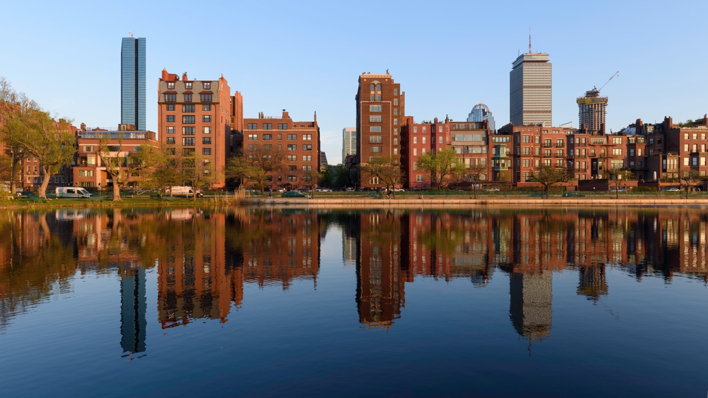
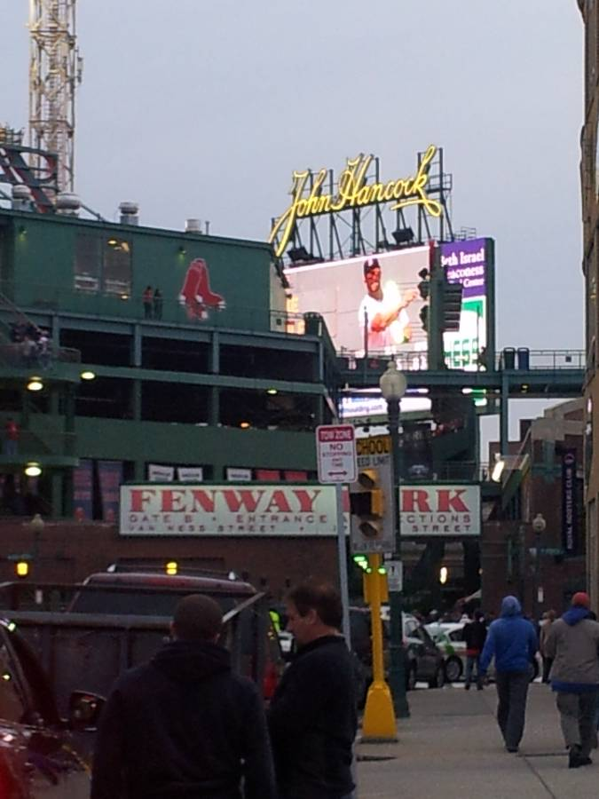
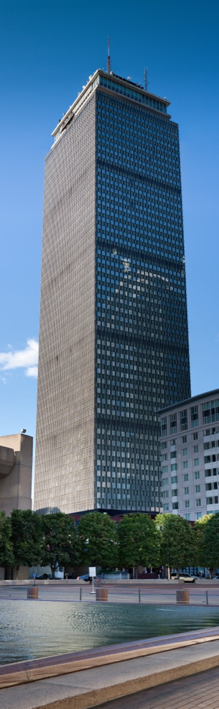
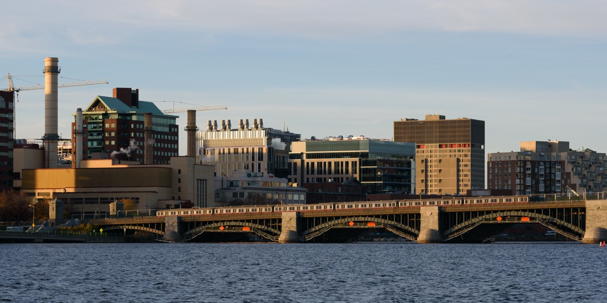
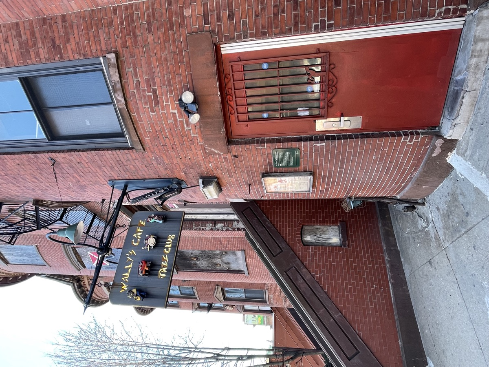
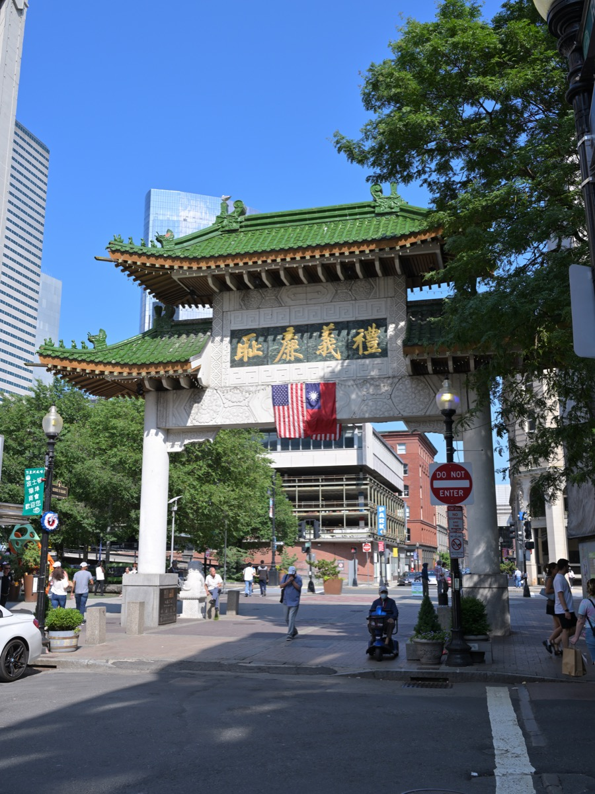

Boston closes early: bars at 2am, last trains around 12:45am. The hours before that are the good ones. This guide covers skyline views, bars by neighborhood, live music and comedy, late-night food, night walks and how to get home, each with an address and T stop.
The short answer
The 10 best things to do in Boston at night
01
The best things to do in Boston at night
Start here if you have one evening. Most of these are free.
See the skyline from Fan Pier

The best close-up of the lit Downtown skyline, reflected in Fort Point Channel. Arrive twenty minutes before sunset and stay until the buildings turn on.
Walk the Harborwalk after dark

Lit and busy the whole way: over the Seaport Boulevard bridge, past Rowes Wharf, ending under the blue-lit trellis a block from the North End cafés.
Sunset and after on the Charles River Esplanade

Faces west, so the sun sets over Cambridge every night. In summer the Hatch Shell has free concerts on Wednesdays and free movies on Fridays.
A night game at Fenway Park

The oldest ballpark in the majors. Bleacher and standing-room tickets are the cheap way in; Lansdowne Street bars run late either way. See our Fenway-Kenmore guide.
View Boston at the Prudential Center

Glass observation level, open-air terrace and a bar, so you can drink while the city lights up below. The hour after sunset beats the sunset slot itself.
Cross the Longfellow Bridge

The Back Bay skyline reflected in the river on one side, MIT on the other, Red Line trains beside you. A 15-minute round trip.
02
Bars in Boston by neighborhood
Last call is 2am, and many places stop at 1am on weeknights.
| Neighborhood | What it's good for | Nearest T stop |
|---|---|---|
| North End | Wine bars, espresso until late, small crowded rooms | Haymarket (Orange/Green) |
| Seaport | Rooftops, big patios, harbor views | Courthouse / World Trade Center (Silver) |
| Back Bay | Hotel bars, cocktails, a quieter drink | Copley / Arlington (Green) |
| Fenway / Kenmore | Game-night bars, live music on Lansdowne St | Kenmore (Green) |
| Cambridge (Central Sq) | Dive bars, live music, latest crowds | Central (Red) |
| Somerville (Union / Davis) | Breweries, neighborhood pubs, beer gardens | Union Square / Davis (Green E ext. / Red) |
| South End | Cocktail bars and restaurants with late bar seats | Back Bay (Orange) |
North End: a late drink or espresso on Hanover Street
Caffè Vittoria (since 1929) has espresso downstairs and grappa upstairs; Parla at 230 Hanover does serious cocktails. Eat first with our North End guide.
Seaport: rooftops and harbor patios
The Lookout faces the skyline across Fort Point Channel. Trillium's Fort Point beer garden and the Barking Crab are nearby. More in the best rooftop bars in Boston.
Back Bay: hotel bars and cocktail rooms
The Oak Long Bar for oak and brass, the Bristol at the Four Seasons for the Public Garden view, Bukowski Tavern on Dalton Street for the beer dive.
Central Square: the latest crowd in the area
The Middle East has shows most nights, the Phoenix Landing has weekend dancing, the Cantab has bluegrass and poetry slams. All within two blocks of the Red Line.
Somerville: breweries and beer gardens
Bow Market has Remnant Brewing on the ground floor; Aeronaut on Tyler Street has live music. More in the best breweries in Boston.
Want to talk to strangers? Try the best bars to meet people in Boston.
03
Live music and comedy in Boston at night
Wally's Cafe Jazz Club

Live jazz every night since 1947 in a narrow, packed room. Early sets are jam sessions. No dress code, no reservation.
The Sinclair
A 525-capacity room with a balcony and good sound, booking touring indie, folk and hip-hop. Shows end in time for the last Red Line train.
Paradise Rock Club and Brighton Music Hall
The Paradise has been Boston's standard rock club since 1977; Brighton Music Hall is its smaller sibling. Both sit in Allston-Brighton, home of the cheap bars.
Laugh Boston
The city's main stand-up club: a 300-seat room with touring headliners on weekends and local showcases on weeknights.
Improv Asylum
Sketch and improv in a Hanover Street basement since 1998. Pair it with a North End dinner and a late cannoli.
Nick's Comedy Stop and the Comedy Studio
Nick's books Boston-born comics in the Theater District; the Comedy Studio is where locals test new material in a 90-seat room. Cheaper and rougher than Laugh Boston.
04
Late-night food in Boston
Most kitchens close at 10pm. After midnight, this is the list.
Chinatown after midnight

The one neighborhood where you can eat properly at 2am: wonton noodle soup and salt and pepper squid after a show. More in our Chinatown guide.
Bova's Bakery
Around the clock since 1926. Sicilian pizza, arancini, lobster tails and cannoli, eaten on the sidewalk.
South Street Diner
A 1947 diner car and the city's 24-hour breakfast: eggs, pancakes, burgers, milkshakes, and a cross-section of Boston at 3am.
Late-night pizza and slices
Regina's 1926 original runs until midnight; Pinocchio's in Harvard Square sells Sicilian squares late on weekends. See the best pizza in Boston and the best late-night food.
Diners and pubs with late kitchens
Charlie's Kitchen, the Tavern in the Square locations and the Cantab keep kitchens open past midnight. Elsewhere, eat before 10pm.
05
The best night walks in Boston
All free, 20 to 60 minutes each, lit and mostly along water.
| Walk | Route | Time | Start T stop |
|---|---|---|---|
| Harborwalk | ICA → Fan Pier → Rowes Wharf → Christopher Columbus Park | 45 min | Courthouse (Silver) |
| Beacon Hill by gaslight | Charles St → Acorn St → Louisburg Sq → State House | 30 min | Charles/MGH (Red) |
| Longfellow loop | Charles/MGH → Longfellow Bridge → Kendall → Harvard Bridge → Esplanade | 60 min | Charles/MGH (Red) |
| Freedom Trail, north half | Faneuil Hall → Paul Revere House → Old North Church → Copp's Hill | 35 min | Haymarket (Orange/Green) |
| Commonwealth Ave Mall | Public Garden → Comm Ave Mall → Mass Ave | 30 min | Arlington (Green) |
| Harvard Square to the river | Harvard Square → JFK St → Weeks Footbridge → back | 30 min | Harvard (Red) |
- Beacon Hill by gaslight is the first-night walk: real gas lamps, brick sidewalks and an empty Acorn Street after 9pm. See our Beacon Hill guide.
- The Freedom Trail at night works best from Faneuil Hall to Copp's Hill; skip the dark Charlestown end. Route in our Freedom Trail guide.
- The Longfellow loop has the best skyline views; do it before 11pm, when the Esplanade empties. Daytime routes in the best walks in Boston.
06
Boston at night by season
| Season | What's different at night |
|---|---|
| Fall (Sep–Nov) | Fenway's last home games, Head of the Charles in mid-October, Halloween trains to Salem. Sunset falls to 4:30pm by late November. |
| Winter (Dec–Feb) | Dark by 4:30pm. Tree lighting on the Common, holiday lights, Frog Pond skating, First Night fireworks. Jazz, comedy and hotel bars indoors. |
| Spring (Mar–May) | Fenway reopens in April, Marathon Monday is the biggest bar day of the year, patios open in May. |
| Summer (Jun–Aug) | The best season. Sunset after 8pm, Hatch Shell concerts and movies, Fourth of July fireworks, North End feasts, rooftops and beer gardens open. |
Season guides: summer, fall, winter and Christmas in Boston.
07
Getting home in Boston at night
- Last subway trains leave downtown stations between 12:30am and 1am; be on a platform by 12:30am.
- Late buses: the 1 along Mass Ave, the 28, the 57 and the SL4/SL5 run past 1am most nights.
- The Charlestown ferry stops around 9 or 10pm; treat it as a sunset ride, not a way home.
- Rideshare surges at 2am when the bars empty, so leaving at 1:30am is cheaper.
- Bluebikes runs 24 hours, and the city is small: Downtown to Back Bay is a 20-minute walk, to the North End 10.
More in getting around Boston.
FAQ
Boston at night: common questions
What time does Boston shut down at night?
Bars close at 1am or 2am. Last subway trains leave downtown around 12:30am to 1am. Chinatown and the South Street Diner stay open later.
Is Boston safe to walk around at night?
The central neighborhoods are busy and well lit until late. Stay on main streets; Boston Common and the Esplanade empty out after about 11pm.
What is there to do in Boston at night for free?
Walk the Harborwalk, watch the skyline from Fan Pier, cross the Longfellow Bridge, sit on the Esplanade dock, or catch a free summer Hatch Shell concert.
Where can I eat late at night in Boston?
Chinatown, where several restaurants serve until 2am or later. The South Street Diner and Bova's Bakery in the North End are open 24 hours.
How do I get home in Boston after the T stops running?
Rideshare, taxi, Bluebike or walking. Downtown to Back Bay or the North End is a 15 to 25 minute walk. Buses 1 and 28 run past 1am.